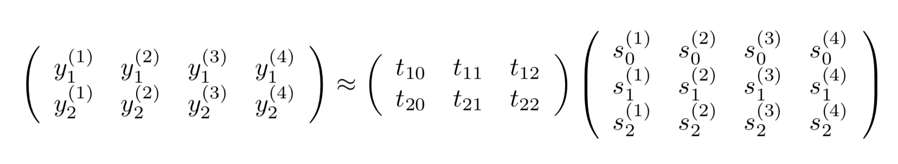

なんか知らんけど第18回だそうな。
原稿用紙の表の4頂点に位置する4字の（マスの左上の）座標を Win11 のペイントで取ると、
y1, y2 s1 s2
左上: 367, 404 ---> 0, 0
右上: 2615, 409 ---> 19, 0
左下: 367, 742 ---> 0, 2
右下: 2613, 746 ---> 19, 2
である。うまいパラメータt10, t11, t12, t20, t21, t22を持ってきて、
となるようにしてやれば良い。ただしs0たちは全部1である。
Y ≒ TSで最小二乗法をやるのでYST=TSSTを解けばよく、T=YST(SST)-1なのでTは
[[ 3.67500000e+02 1.18263158e+02 -5.00000000e-01] [ 4.04250000e+02 2.36842105e-01 1.68750000e+02]]
なるほど。
今回は120px。
実際にやってみると上手くいったのでやったぜ。
それぞれの画像に分割して保存していかねば。
今回もPythonを使う。